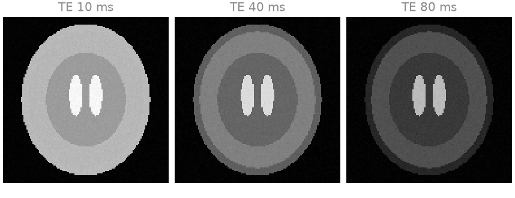
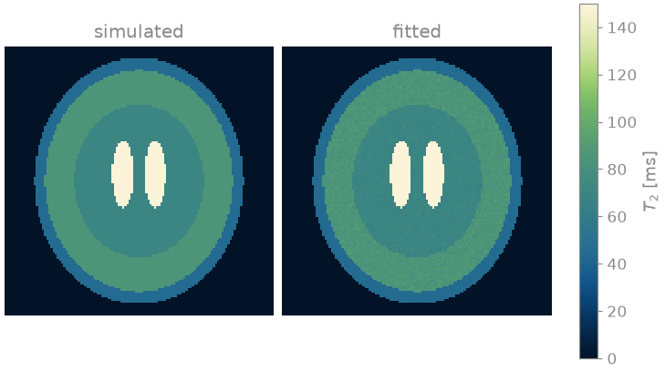
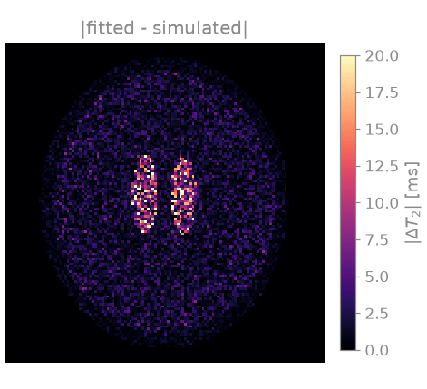

Note
Go to the end to download the full example code.
Parameter maps from scanner images#
This example estimates a \(T_2\) map from the magnitude images a scanner exports, without access to the raw data: a multi-echo spin-echo series is read from DICOM, the decay is fitted voxel by voxel, and the map is written back as a DICOM series of the same study and as a NIfTI volume. The aim is to show the geometry and the acquisition timings passing from the scanner’s files to the fit and on to the output unchanged, so that the map overlays the images it was computed from.
Many protocols export each echo of a multi-echo acquisition, or each
inversion time of an inversion-recovery experiment, as a DICOM series of its
own. bartorch.io.read_dicom() reads several series as one, sorts the
images into contrasts by their echo, inversion and repetition times, and
returns those times with the images: they are the sampling points of the
signal model. The images and the model are then those of
Parameter maps straight from k-space, minus the Fourier encoding: the fit of
bartorch.apps.mobafit() is Gauss-Newton on the signal equation alone.
A magnitude image is not Gaussian where the signal is small: its noise is
Rician and has a positive floor, which a decay model fitted to it reads as a
longer \(T_2\). mobafit() with magnitude=True
fits the magnitude of the model to the magnitude of the data, which removes
the phase from the problem but not the floor; the echoes here stay above it.
The input series is simulated in a hidden cell and written to a temporary directory, standing in for an export from the scanner.
Prerequisites. Parameter maps straight from k-space.
Learning objectives
Read a multi-echo series stored as one DICOM series per echo, with its echo times and its voxel-to-world affine.
Fit
bartorch.nlop.MultiEchoto magnitude images withbartorch.apps.mobafit().Write the map as a DICOM series of the same study, and as NIfTI, in the geometry of the input.
import tempfile
from pathlib import Path
import numpy as np
import torch
from bartorch import apps, io, nlop
Reading the series#
The export holds one series per echo, numbered 101 to 108. Asked for all of
them, read_dicom() returns the images as
(contrasts, slices, rows, columns) in order of echo time, the echo times
themselves in milliseconds, and the affine from voxel indices to RAS
millimetres; every echo has to cover the same slices.
echoes = io.read_dicom(scanner, series=range(101, 109))
te = echoes.timings["echo_time"]
print(f"images {tuple(echoes.image.shape)}, TE {te.tolist()} ms")
print("voxel size", " x ".join(f"{v:.1f}" for v in echoes.affine[:3, :3].norm(dim=0)), "mm")
images (8, 1, 128, 128), TE [10.0, 20.0, 30.0, 40.0, 50.0, 60.0, 70.0, 80.0] ms
voxel size 1.7 x 1.7 x 4.0 mm
The images of three of the echoes, on one window: the cerebrospinal fluid in the ventricles, with the longest \(T_2\), keeps its signal across the train while the scalp fat loses most of it.

Fitting the decay#
bartorch.nlop.MultiEcho is built on the echo times the files state
and on the in-plane shape of the slice. The fit is voxel by voxel, so the
slice axis is dropped here; a volume is fitted the same way with the model
built on (slices, rows, columns). DICOM stores intensities in arbitrary
units; the fit scales the echoes to unit peak and returns the amplitude in
the units of the files.
images = echoes.image[:, 0].to(torch.complex64)
M = nlop.MultiEcho(te.tolist(), tuple(images.shape[1:]))
maps = apps.mobafit(images, M, magnitude=True, T2=80.0)
t2 = torch.where(images[0].abs() > 0.05 * images.abs().max(), maps["T2"], torch.zeros(()))
for (region, truth, _), name in zip(compartments, ("fat", "grey matter", "white matter", "CSF")):
inner = torch.from_numpy(region)
print(f"{name:>13}: T2 {float(t2[inner].median()):6.1f} ms against {truth:5.1f} ms")
fat: T2 45.0 ms against 45.0 ms
grey matter: T2 85.0 ms against 85.0 ms
white matter: T2 70.0 ms against 70.0 ms
CSF: T2 250.1 ms against 250.0 ms
Writing the map#
The map goes back to DICOM as a series of the same study: the first
echo’s dataset lends its patient, study and frame of reference, and the
series gets a number and a description of its own. ImageType marks it as
derived. NIfTI stores the same affine, which is what a registration or a
segmentation package reads.
output = Path(tempfile.mkdtemp())
io.write_dicom(
output / "t2-map",
t2,
echoes.affine,
header=echoes.header,
SeriesNumber=201,
SeriesDescription="T2 map",
ImageType=["DERIVED", "PRIMARY", "T2 MAP"],
)
io.write_nifti(output / "t2-map.nii.gz", t2, echoes.affine)
written = io.read_dicom(output / "t2-map")
same_study = written.header.StudyInstanceUID == echoes.header.StudyInstanceUID
print(f"patient {written.header.PatientID}, same study {same_study}")
print(f"largest affine difference {float((written.affine - echoes.affine).abs().max()):.1e} mm")
patient P0001, same study True
largest affine difference 2.0e-06 mm
The map read back from the DICOM series beside the \(T_2\) the images were simulated with, and the difference between them. The error is largest in the cerebrospinal fluid, where eight echoes over 80 ms sample only the start of a 250 ms decay.


Total running time of the script: (0 minutes 53.387 seconds)